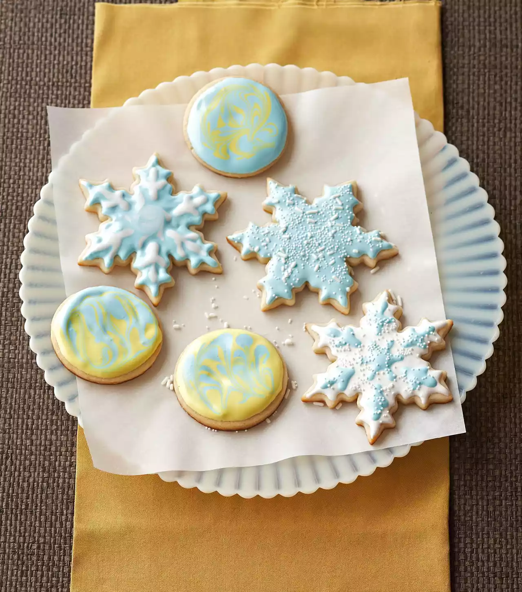

The Best Sugar Cookies

Description
Making decorated sugar cookies is a must during the holiday season, and these are the best sugar cookies you'll ever taste. Whip up a batch of these sugar cookies from scratch and decorate with royal icing to match any special occasion.
Ingredients
Cookies
- 2/3 cup butter, softened
- 3/4 cup sugar
- 1 tsp baking powder
- 1/4 tsp salt
- 1 egg
- 1 Tbsp milk
- 1 tsp vanilla
- 2 cups all-purpose flour
- Small decorative candies (optional)
Royal Icing
- 4 cups powdered sugar
- 3 Tbsp meringue powder
- 1/2 tsp cream of tartar
- 1/2 cup water
- 1 tsp vanilla
- 2-4 Tbsp water
- Assorted colors paste food coloring (optional)
Directions
Cookies
- In a large bowl beat butter on medium to high speed for 30 seconds. Add sugar, baking powder, and salt. Beat until combined, scraping sides of bowl occasionally. Beat in egg, milk, and vanilla until combined. Beat in as much of the flour as you can with the mixer. Using a wooden spoon, stir in any remaining flour. Divide dough in half. Cover; chill about 30 minutes or until dough is easy to handle.
- Preheat oven to 375°F. On a lightly floured surface, roll dough, half at a time, until 1/8 to 1/4 inch thick. Using 2-1/2-inch cookie cutters, cut dough into desired shapes. Place cutouts 1 inch apart on ungreased cookie sheets. Repeat with the remaining dough.
- Bake about 7 minutes or until edges are very light brown. Transfer to wire racks; cool. If desired, frost with desired icing and/or decorate with decorative candies.
Royal Icing
- In a large bowl, combine powdered sugar, meringue powder, and cream of tartar. Add the 1/2 cup water and the vanilla. Beat with an electric mixer on low speed until combined, then on high speed for 7 to 10 minutes or until very stiff. Add the 2 to 4 tablespoons water, 1 teaspoon at a time, to make an icing of spreading consistency. If desired, divide icing into individual bowls and tint with paste food coloring.
Recipe shared from Better Homes & Gardens